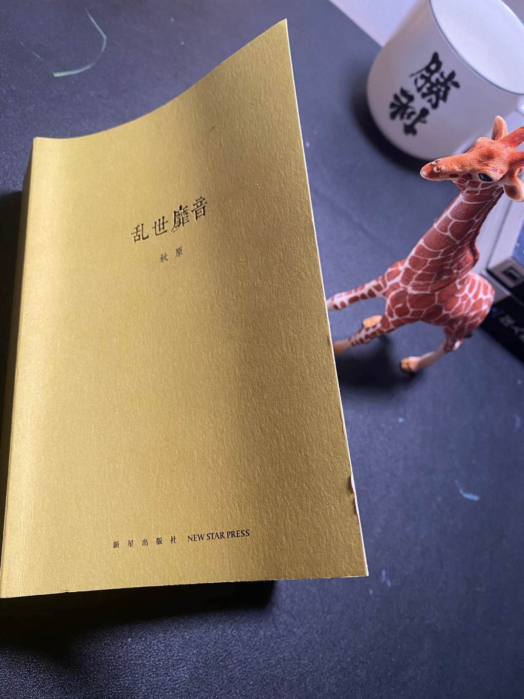

杂谈书坊-“陷王于恶”
“陷王于恶” 这个典故出自汉书,叙述了海昏侯刘贺被霍光废黜的故事。
贺者，武帝孙，昌邑哀王子也。既至，即位，行淫乱。光忧懑，独以问所亲故吏大司农田延年。延年曰：“将军为国柱石，审此人不可，何不建白太后，更选贤而立之？” 光曰：“今欲如是，于古尝有此否？” 延年曰：“伊尹相殷，废太甲以安宗庙，后世称其忠。将军若能行此，亦汉之伊尹也”。光乃引延年给事中，阴与车骑将军张安世图计，遂召丞相、御史、将军、列侯、中二千石、大夫、博士会议未央宫。光曰：“昌邑王行昏乱，恐危社稷，如何？” 群臣皆惊鄂失色，莫敢发言，但唯唯而已。田延年前，离席按剑，曰：“先帝属将军以幼孤，寄将军以天下，以将军忠贤能安刘氏也。今群下鼎沸，社稷将倾，且汉之传谥常为孝者，以长有天下，令宗庙血食也。如令汉家绝祀，将军虽死，何面目见先帝于地下乎？今日之议，不得旋踵。群臣后应者，臣请剑斩之”。光谢曰：“九卿责光是也。天下匈匈不安，光当受难”。于是议者皆叩头，曰：“万姓之命在于将军，唯大将军令”。
光即与群臣俱见白太后，具陈昌邑王不可以承宗庙状。皇太后乃车驾幸未央承明殿，诏诸禁门毋内昌邑群臣。王入朝太后还，乘辇欲归温室，中黄门宦者各持门扇，王入，门闭，昌邑群臣不得入。王曰“何为？” 大将军跪曰：“有皇太后诏，毋内昌邑群臣”。王曰：“徐之，何乃惊人如是!” 光使尽驱出昌邑群臣，置金马门外。车骑将军安世将羽林骑收缚二百余人，皆送廷尉诏狱。令故昭帝侍中中臣侍守王。光敕左右：“谨宿卫，卒有物故自裁，令我负天下，有杀主名”。王尚未自知当废，谓左右：“我故群臣从官安得罪，而大将军尽系之乎？” 顷之，有太后诏召王，王闻召，意恐，乃曰：“我安得罪而召我哉!” 太后被珠襦，盛服坐武帐中，侍御数百人皆持兵，期门武士陛戟，陈列殿下。群臣以次上殿，召昌邑王伏前听诏。光与群臣连名奏王，尚书令读奏。
皇太后诏曰：“可”。光令王起拜受诏，王曰：“闻天子有争臣七人，虽无道不失天下”。光曰：“皇太后诏废，安得天子!” 乃即持其手，解脱其玺组，奉上太后，扶王下殿，出金马门，群臣随送。王西面拜，曰：“愚戆不任汉事”。起就乘舆副车。大将军光送至昌邑邸，光谢曰：“王行自绝于天，臣等驽怯，不能杀身报德。臣宁负王，不敢负社稷。愿王自爱，臣长不复见左右”。光涕泣而去。群臣奏言：“古者废放之人屏于远方，不及以政，请徙王贺汉中房陵县”。太后诏归贺昌邑，赐汤沐邑二千户。昌邑群臣坐亡辅导之谊，陷王于恶，光悉诛杀二百余人。出死，号呼市中曰：“当断不断，反受其乱”。
这段文字记载于《汉书·霍光金日禪传》，完整的记录了大将军霍光废黜刘贺的详细过程。2015年，在江西南昌发现了轰动一时的海昏侯墓，而刘贺正是这海昏侯墓的主人。关于海昏侯墓的相关信息，大家可以查询。
刘贺是汉武帝的孙子，其父刘髆为昌邑哀王[今山东菏泽]，刘贺在历史上短暂的做过27天皇帝，后因为言行昏(淫)乱被大将军霍光和太后废黜。据记载，刘贺被废的主要原因是先帝刚驾崩棺材都还停放在宫中的时候就迫不及待的和乐人寻欢作乐，被朝臣认为没有“人主之尊”。说起来，我们现在所经历的一些现实就很魔幻了。据说，现在很多地方在治办丧事的时候，都喜欢把丧事办的喜庆风光，因此网络上也流传了很多坟头蹦迪的鬼畜视频出来。这真是，先人的棺材板都还没盖上，后来人就一蹦跳起了三丈高。
我今天知道这个这个典故，是读了秋原先生著的《乱世靡音》，这本书讲了江湖中“艺人”的生存之道和历史演变，颇有意思。
古时候，”江湖艺人”的身份低位，仅仅只有少数造诣极高的艺人，才可能得到有限的尊重，不像现在的明星这么风光，他们的身份地位几乎排在最末，甚至连现在的某些平台主播也不如。
其实，哪怕是最牛逼的艺人(为皇帝和朝臣服务的官伶)，可能下场也比较凄凉。譬如上述“陷王于恶”的这两百多人就半数都是“乐人”，他们的结局是被 ** 悉数诛杀 **。
最后，再贴点学到的新知识。
※ 献艺和卖艺，前者有很高的雅兴，后者是鄙俗的生意。
※ “玩意儿”这个词同”玩艺儿”，指的是稍微有些才能的乞丐。
※ 长期以来以艺娱人低人一等。这也是古时候罪犯抄家为什么男的杀头，妻女则送入教坊司的原因。
※ 以艺娱人的人被称为乐人或乐工，职业会被编入乐户，算作贱民，而管理乐户的机构就叫做乐府。
※ 艺人主要有三种起源分别是“人类古老的祭祀活动、人们对身体残障者的嘲弄以及流民行乞的手段”。